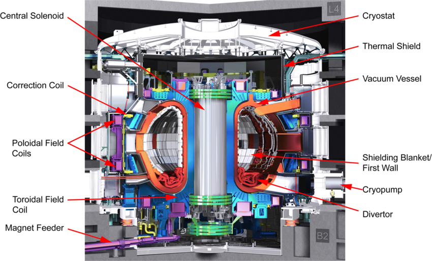
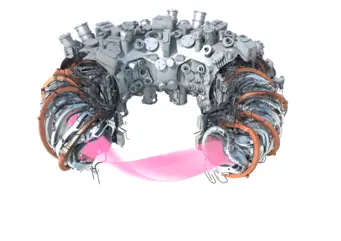

Table of Contents |
|---|
| Abstract |
| Introduction |
| Analysis and discussion |
| References |
Global energy demand is on the rise, and nuclear fusion is one of the leading frontiers for a clean and sustainable future. We seek to harness the energy of the stars and replicate the intense reactions that happen in the stellar environments to give us the opportunity for potentially limitless power. This article examines fundamental ideas on how certain fusion reactors use strong magnetic fields to contain plasma, derived from super heating D-T fuel, which then fuses the isotopes to become helium – releasing high-energy neutrons. We look at the diverse architectural designs of different reactors and how they contain this intense heat created from the plasma, protecting the surrounding walls of the machinery from melting. Alongside making near unlimited energy, we look into how high energy neutron flux within the fusion systems can be used in transmutation, producing new elements and precious metals like gold, showing us how nuclear fusion could transform both the power grid and open a new world of nuclear alchemy.
Nuclear fusion, the process that powers the sun, could potentially support the demand for clean and sustainable energy around the world. Unlike nuclear fission reactors which generate power from splitting heavy atoms apart, fusion energy involves fusing light atomic nuclei together under extreme conditions. Although fusion power always seems to be 30 years away, we inch closer to perfecting our designs and methods in achieving this sustainable power. But how do we actually produce this energy, how do reactor designs compare, and could we take it a step further and create heavier elements?
For billions of years, our sun has been undergoing one of the most violent reactions in the universe – nuclear fusion. At every moment, its gravitational core crushes millions of tons of hydrogen together, generating plasma and releasing energy that heats our entire solar system. Bringing this same force to our planet means re-creating these conditions without the gigantic gravitational force to contain the plasma. Instead, we solve the problem of handling this plasma using electromagnets.
This is where fusion reactors come in. The most famous and widely used design is the tokamak - a toroidal (doughnut shape) chamber surrounded by gigantic electromagnets. In the middle of this ring is a central magnetic pillar called the central solenoid. To start up and bring the reactor to life, we go through a series of intricate processes, first we begin with injecting a small amount of hydrogen fuel into the clean vacuum vessel. Then a high-voltage electric pulse is fired through the chamber, stripping electrons from the gas atoms to form a supercharged state of matter, plasma (ITER, What is a tokamak?). To heat the initial plasma, the central solenoid pushes millions of amps of electrical current directly through it. This is known as Ohmic heating, a resistive process that warms the gas up to millions of degrees. However, as the plasma gets hotter, its electrical resistance drops, therefore making the Ohmic heating less effective. In order to reach the target temperature of around 150 million degrees Celsius, reactors must fire auxiliary heating systems, such as neutral particle accelerators and high-power radio-frequency waves, propelling the fuel into full fusion ignition (ITER, External heating systems 2024).
In order to contain this fragile but chaotic plasma, a complex system of magnetic fields is set in place to prevent the 100+ million-degree plasma from being in direct contact with the machine walls, while also protecting the plasma itself from contamination through other sources. One of the main pollutants of plasma is the helium waste produced. When the deuterium and tritium fuel fuse together, it creates helium along with a high energy neutron and a large amount of energy. Initially these helium atoms are useful as they transfer some energy to the surrounding plasma, but after it loses that energy, it becomes helium ash – a contaminant to the plasma. This would lead to a lower concentration of deuterium and tritium atoms which would reduce the likelihood of fusion reactions, causing the reactor to struggle with continuous fusion production and eventually ceasing all together. One way to approach this is the pump limiters (D.S. Gray et al 1998 Nucl. Fusion 38 1585), which gives a route for unwanted particles to an exhaust and pumping system. Modern reactor designs like the tokamak use divertors which guide the waste away to dedicated pumping systems.
The 2 leading designs for fusion reactors are Tokamaks and Stellarators. In figure 1 can see what the tokamak reactor design is, used in places such as ITER. Figure 2 shows what a stellarator is, and it's quite clear how they differ especially in terms of the main containment design for plasma.


In tokamaks, the magnetic field is generated through a combination of external magnetic coils and a large electrical current flowing through the plasma. The plasma current produces a poloidal magnetic field, which combines with the externally generated toroidal field to create the twisted magnetic field lines that are needed for containment (Yuhong Xu, A general comparison between tokamak and stellarator plasmas, 2016).
For stellarators, they usually use specially shaped external magnetic coils to generate the twisting magnetic field. This means they can maintain their magnetic configurations without relying on current-driven plasma (P Helander et al 2012 Plasma Phys. Control. Fusion 54 124009).
Tokamaks have simpler magnetic coil arrangements, making them easier to manufacture and engineer, but the large electrical current flowing through the plasma can become unstable, potentially causing a sudden loss of confinement. Stellarators do not depend on the large plasma current, meaning they avoid disruptions associated with tokamaks. However, their magnetic coils have intricate shapes, making them considerably more challenging to assemble.